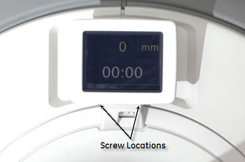
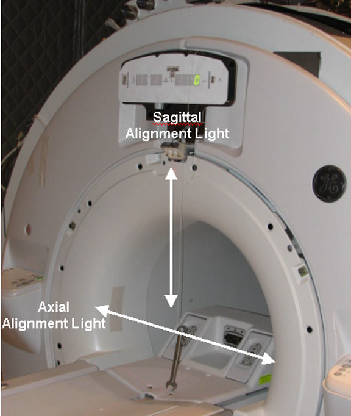
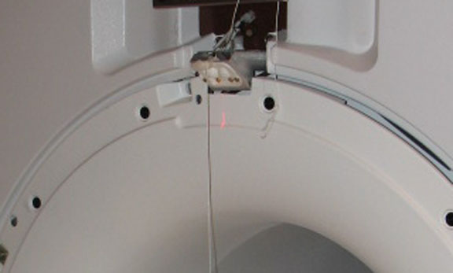
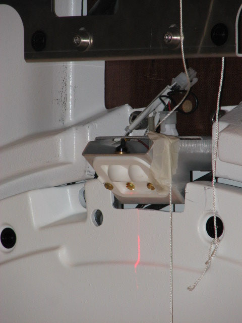
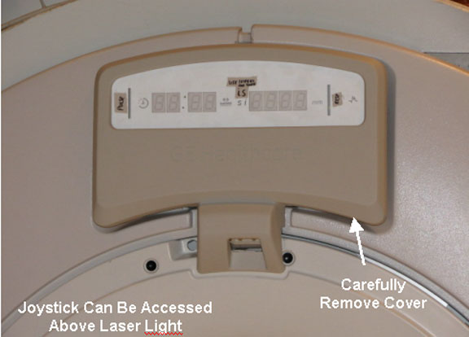

Operating Documentation
Direction 5670000, Rev# 1
Optima MR450w 1.5T Service Methods
Module Version 2.0, Version Date 11/18/09
Operating Documentation |
| Required Persons | Preliminary Reqs | Procedure | Finalization |
|---|---|---|---|
| 1 | Not Applicable | 30 minutes | Not Applicable |
| Item | Qty | Effectivity | Part# | Manufacturer | |
|---|---|---|---|---|---|
| Non-Ferrous Allen Wrench Set | 1 | - | - | ||
| Non-Ferrous Flat Blade Screwdriver | 1 | - | - | ||
If an In Room Monitor is installed, follow the steps in this section. If not, see System Without an In Room Monitor.
Remove the laser light lens cover (top of magnet) by removing two (2) screws. (See Illustration 1.)
Illustration 1: Remove Laser Cover

Press the Alignment button on the control panel to turn on the laser light.
| ||||
| Magnetic Field! | ||||
| Use of ferro-magnetic device may cause injury or equipment damage. | ||||
| When running a plumb line, a non-magnetic device or tool must be used. |
Run a plumb line, using a non-magnetic device, down from the Sagittal and Axial (top) laser lights. Verify that both the Sagittal and Axial alignment lights are aiming straight down and aligned with the string. (See Illustration 2.)
Illustration 2: Running a Plumb Line

| NOTE: | Make sure to tighten the head screws after making the required adjustments. |
If adjustments are needed, remove the upper display by carefully prying the cover off. (See Illustration 3 and Illustration 4.)
Illustration 3: Adjusting Laser Lights

Illustration 4: Properly Aligned Laser Lights

Replace the laser light lens cover.
If an In Room Monitor is not installed, follow the steps in this section.
Turn the laser lights on.
| ||||
| Magnetic Field! | ||||
| Use of ferro-magnetic device may cause injury or equipment damage. | ||||
| When running a plumb line, a non-magnetic device or tool must be used. |
Run a plumb line, using a non-magnetic device and string down from the Sagittal and Axial (Top) laser light. Verify that both the Sagittal and Axial Alignment Lights are aiming straight down. (See Illustration 5.)
Illustration 5: Alignment Light Adjustment

| NOTE: | There is only one joystick to adjust the laser light. |
When adjusting the Sagittal Alignment Light, the plumb line must run down the front of the Laser Light cover. (See Illustration 6.) The Sagittal Alignment light runs parallel to the magnet in the center of the bore.
Illustration 6: Sagittal Alignment Light

Verify that the string is properly aligned with the beam. Then, adjust Sagittal Alignment Light. This light runs parallel to the bore core.
When adjusting the Axial Alignment Light, the plumb line must run down the side of the Laser Light cover. (See Illustration 7.) The Axial light runs perpendicular to the magnet bore.
Illustration 7: Axial Light Alignment

Verify that the string is properly aligned with the beam. Then, adjust Axial Alignment Light. This light runs perpendicular to the bore core.
| NOTE: | There is only one joystick to adjust the laser light. |
If adjustments are needed, remove the 7-segment display by removing M10 screw and carefully prying the cover off. (See Illustration 8.)
Illustration 8: Upper Laser

Adjust the lights as necessary using the single joystick. The joystick can be moved right-left, forward-backward, and rotated.
No finalization steps.